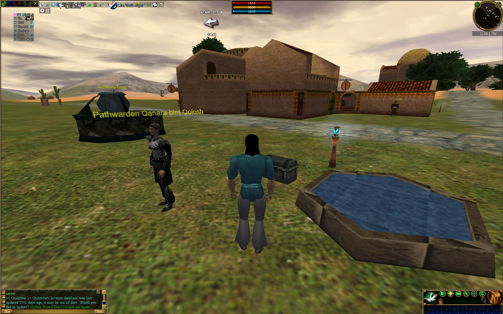
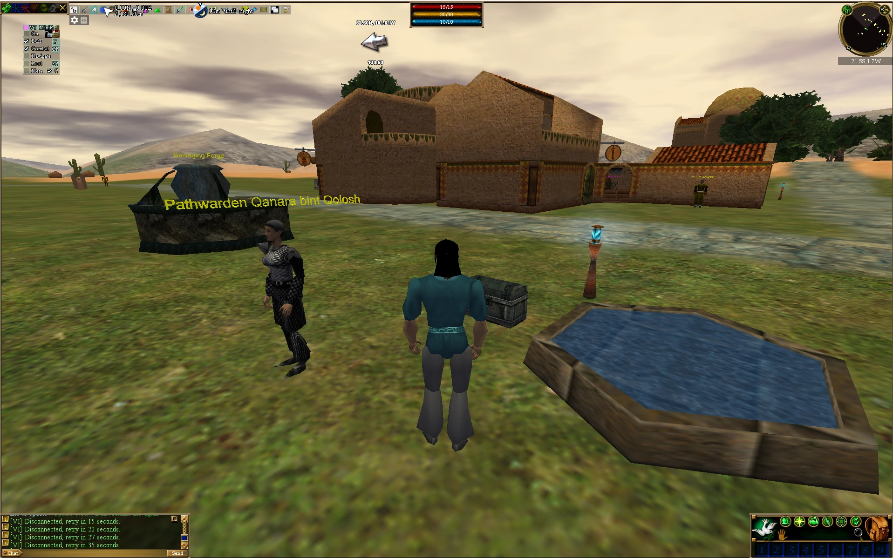
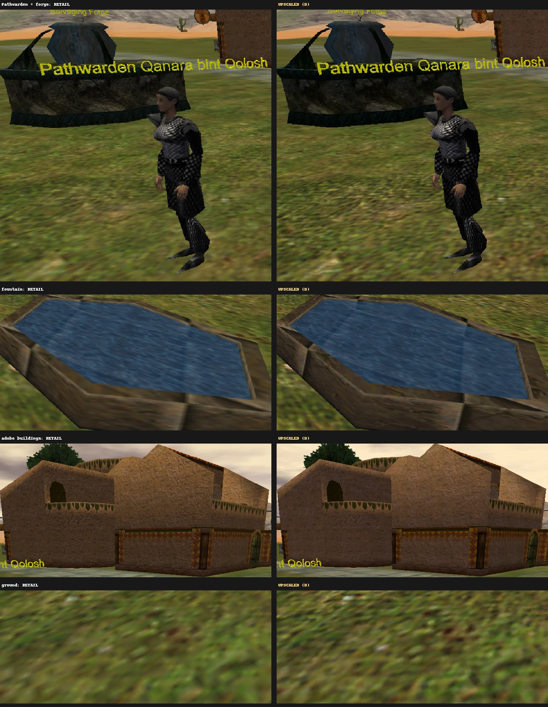
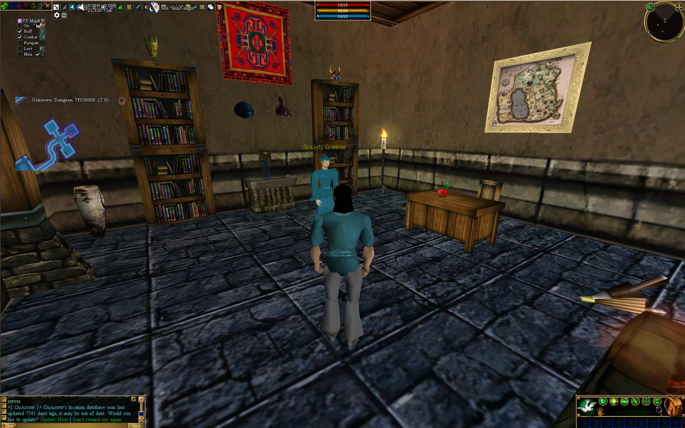
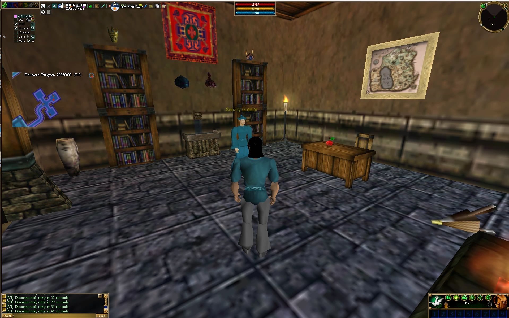
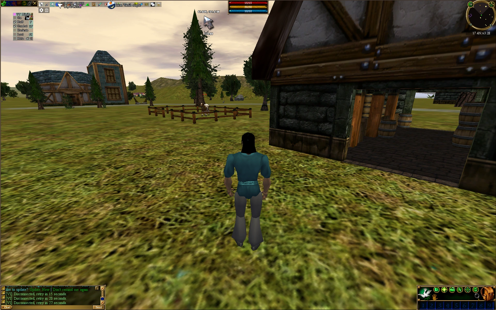
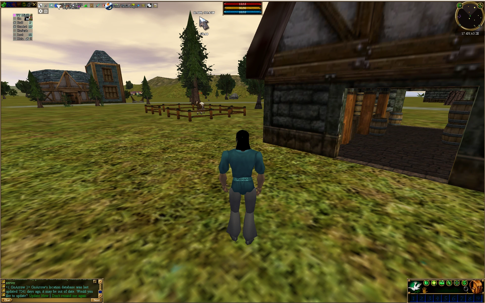
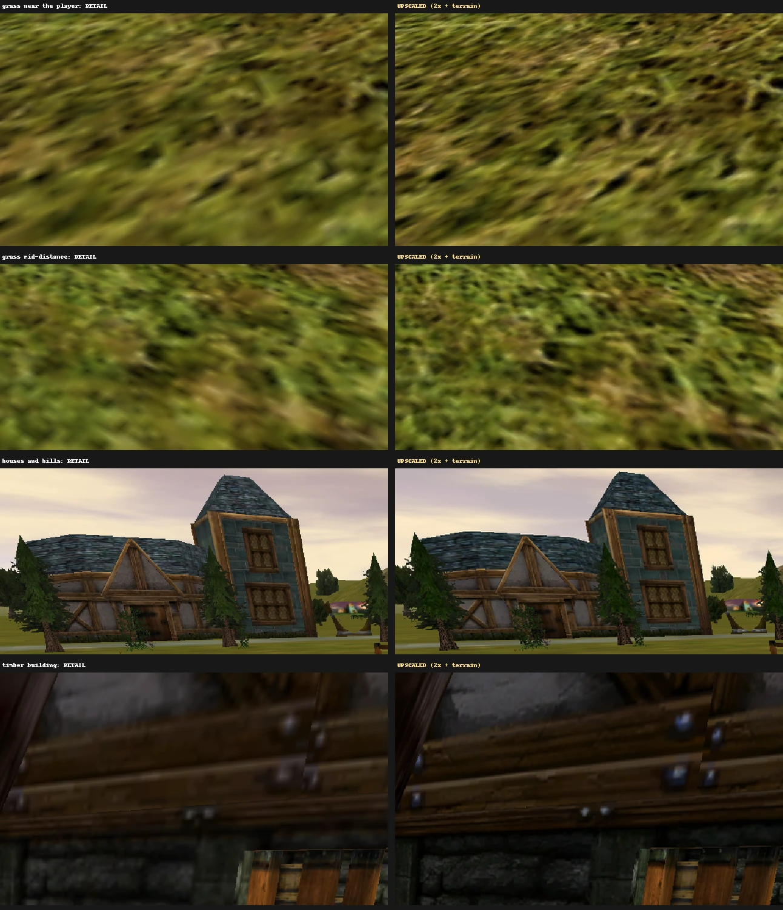
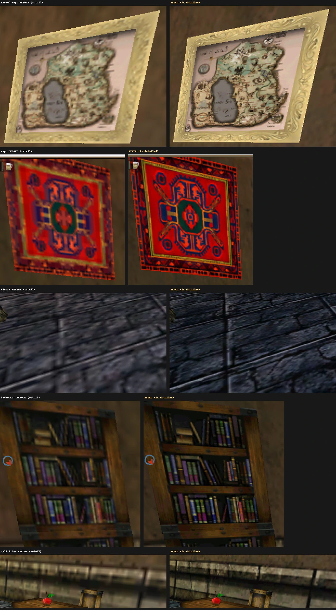

A desert town
Chainmail you can count the links in, a forge with real stonework, and plaster you can see on the adobe walls.


OriginalAC-HDClose-ups

AC-HD · version 1.0
Works on every end-of-retail server. Nothing for server admins to do.
Every creature, suit of armor, building, dungeon and blade of grass at twice the resolution, installed in one click and removed just as easily.


OriginalAC-HDWhy it's different
Servers have tried custom dat files before. But once you install one server's files, you have to swap back to the end-of-retail files to play anywhere else. So nearly every server sticks to end of retail, and Asheron's Call has looked the same for over twenty years.
AC-HD only touches textures. Version numbers and all gameplay data stay exactly end of retail, so servers see a normal retail client.
It's entirely on your PC. Servers need no changes, no patches and no permission, and nothing changes for other players.
Two buttons swap between AC-HD and the original textures instantly. Uninstalling puts your original files back.
See the difference
Real in-game screenshots, taken before and after installing. Move across each one to compare.
Chainmail you can count the links in, a forge with real stonework, and plaster you can see on the adobe walls.


OriginalAC-HD
The ground is upgraded too: individual grass clumps instead of a smear, all the way to the horizon, plus sharper roof slates and timber.


OriginalAC-HD
Where the upgrade is easiest to see: the map's coastlines and labels, the rug's pattern, every crack in the floor.

What's upgraded
Install
Install HD Textures.bat. Your original files are kept, and switching is instant from then on.To switch, double-click Use Retail Textures.bat or Use HD Textures.bat. To remove AC-HD completely, use Uninstall HD Textures.bat. If your game isn't in C:\Turbine\Asheron's Call, the included README shows the one-line command for other folders.
Questions
Yes, on any server that runs the end-of-retail game files, which is nearly all of them. AC-HD keeps every version number and all gameplay data identical to end of retail. Servers that ship their own custom files still need their own files.
No. Everything happens on your PC. Server admins don't need to do anything, and other players see no difference.
No. Only how textures look. Items, creatures, spells, maps and everything else the game logic uses are untouched.
Areas take a moment longer to load the first time you visit them, and the game uses more memory: about 1.6 GB in busy outdoor areas, compared with about 1.2 GB. That's well within what the client can use (4 GB).
Double-click Use Retail Textures.bat (instant), or Uninstall HD Textures.bat to remove AC-HD and restore your original files.
It only swaps two files in your Asheron's Call folder: client_portal.dat and client_highres.dat. Your originals are kept next to them. The download includes SHA-256 checksums, and the installer checks them. The scripts are plain text you can read, and the full source is on GitHub.
Each texture was upscaled with the Real-ESRGAN AI model, color-corrected against the original, and packed back into the game's own formats. The outdoor ground needed special handling to fit the client's terrain blending. The whole process is documented on GitHub.
Switch to retail textures and see whether it happens again. If it only happens with AC-HD, report where you were and what you were doing on the GitHub issues page. Rare crashes when portaling into very busy towns also happen on the original textures.
Free, end-of-retail compatible, and one click to undo.